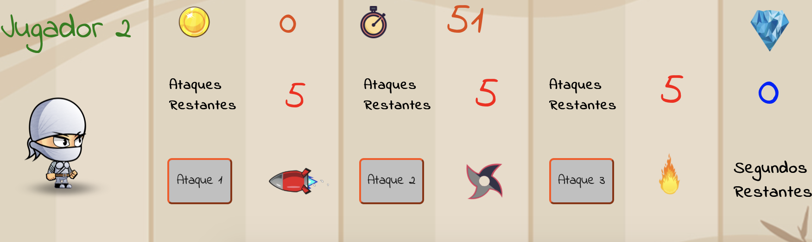
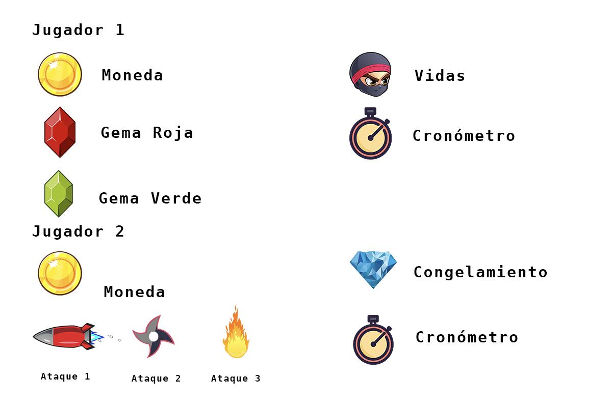

Instrucciones
Shoot the Ninja
Shoot the Ninja es un juego inspirado en Kido un Ninja Japonés que murió
en batalla al pelear con un gran número de enemigos. Caracterizado por
ser rápido, ligero, y listo, además de ser un gran conocedor de diversas
armas orientales.
Descripción del Juego
Kido enfrentará a Kazama uno de los Ninjas más peligrosos y con gran
número de armas disponibles para atacar.
El juego está diseñado para que en cada partida dos jugadores se
enfrenten entre ellos. Uno debera sobrevivir los ataques del segundo
jugador y este acabará con el número de vidas del primero.
El juego se desarrollara en una pantalla divida en dos, la parte
superior de la pantalla esta destinada al jugador 1 donde esquivara los
ataques producidos por el Jugador 2 que tendra una consola de ataques en
la segunda mitad de la pantalla.
Cada partida durará 75 segundos en caso de que el jugador 1 haya
sobrevivido los ataques el tiempo se terminara. El jugador que tenga el
mayor número de monedas ganará la partida. En caso de que tuviesen el
mismo número de monedas, se tomará como un empate.
Controles
Jugador 1 Jugador 2
 Tecla: "C" = Desplazamiento hacia la izquierda de la pantalla.
Tecla: "C" = Desplazamiento hacia la izquierda de la pantalla.
Tecla: "M" = Desplazamiento hacia la derecha de la pantalla.
Tecla: "espacio" = Brinca.
* Unicamente se utilize el click "izquierdo"
Menú del Juego
Al precionar "Iniciar Juego" automaticamente te llevara a la pantalla
del juego y este iniciara inmediatamente.
Al precionar "Instrucciones" se abrira una pantalla flotante podras
cerrarla al presionar la "X" en la esquina superior derecha.
Al precionar "Créditos" se abrira la pantalla de créditos y al terminar
de retornara al "Menú Principal".
Objetivos del Juego

Jugador 1
El jugador tendrá como objetivo principal usar sus habilidades y
velocidad para esquivar los proyectiles, shuriken o lanzafuegos lanzados
por el segundo jugador.
Cuando el jugador está esquivando los ataques tendrá como segundo
objetivo el recolectar monedas, si se llegase al final del tiempo y este
tiene más monedas que el jugador 2 habrá ganado la partida.
En caso de que el jugador comenzará a perder vidas podrá recuperarlas al
recolectar Gemas rojas, cada Gema recolectada sumará una vida mas.
El jugador tiene un ataque secreto y lo activará al tocar una Gema
Verde. Cuando esta se active el jugador bloqueara por 5 segundos los
ataques del jugador 2 y podrá recolectar el mayor número de vidas y
monedas sin tener que preocuparse por esquivar algún ataque.

Jugador 2
El jugador tendrá como objetivo principal el lanzar ataques por medio de
de sus tres botones en su consola de ataques.

Los ataques están limitados a 5 eventos por cada ataque.
Primer ataque
Se accionara al presionar el botón ataque 1 y se desplaza de derecha a
izquierda de la pantalla en contra del primer jugador.
Segundo ataque
Se accionara al presionar el botón ataque 2, se mostrará en la esquina
superior izquierda y se desplazará hasta el nivel del suelo de la
plataforma, en cuanto haga contacto con el fondo, se dispara en contra
del jugador 1 de izquierda a derecha de la pantalla.
Tercer ataque
Se accionara al presionar el botón ataque 3, se mostrará bajo el suelo
de la plataforma y aleatoriamente se activara del suelo de la plataforma
hacia el cielo.
Si cualquiera de estos ataques colisionaran con el Primer Jugador, éste
perderá una vida y el ataque desaparecerá de la pantalla.
Como segundo objetivo el jugador puede recolectar monedas del jugador 1
al hacer el click en ellas, las sumara a su bolsa y en caso que el
jugador 1 sobreviviera a lo largo de la partida, el jugador que tenga
más monedas ganará.
Congelamiento
En caso que el jugador 1 accionara la Gema Verde los botones de ataques
se bloquearan por 5 segundos y no podrá realizar ningún ataque hasta que
el contador llegue a cero. Lo unico que podra realizar en ese tiempo es
recolectar monedas.
Tabla de Iconos por Jugador

×